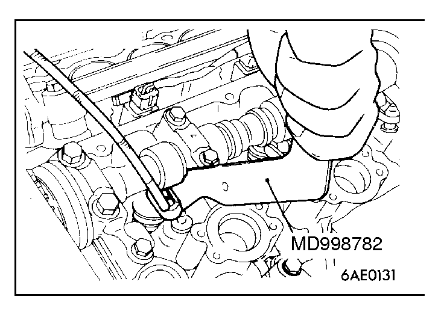
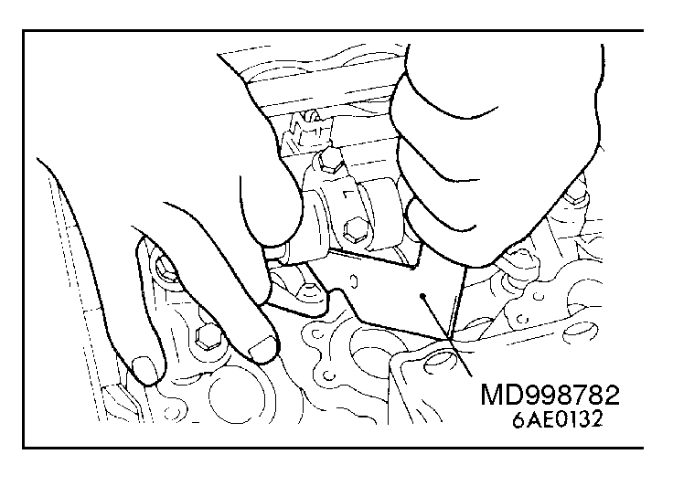

![[Previous]](https://mitsubishitechinfo.com/data/F24S/BUTTONS/fprevg.png)
![[Next]](../../../BUTTONS/fnext.png)
 
LASH ADJUSTER CHECK
If an abnormal noise (chattering noise) suspected to be caused by malfunction of the lash adjuster is produced immediately after starting the engine and does not disappear, perform the following check.
NOTE
1.An abnormal noise due to malfunction of the lash adjuster is produced immediately after starting the engine and changes with the engine speed, irrespective of the engine load.
If, therefore, the abnormal noise is not produced immediately after starting the engine or does not change with the engine speed, or it changes with the engine load, malfunction of the lash adjuster is not the cause for the abnormal noise.
2.When the lash adjuster is malfunctioning, the abnormal noise is rarely eliminated by continuing the warming-up of the engine at idle speed.
However, the abnormal noise may disappear only when seizure is caused by oil sludge in the engine whose oil is not maintained properly.
1.Start the engine.
2.Check if abnormal noise produced immediately after starting the engine changes with the change in the engine speed.
If the abnormal noise is not produced immediately after starting the engine or it does not change with the engine speed, malfunction of the lash adjuster is not the cause for the noise. Therefore, investigate other causes. For your information, the abnormal noise is probably caused by some other parts than the engine proper if it does not change with the engine speed. (In this case, the lash adjuster is in good condition.)
3.With the engine idling, change the engine load (shift from N to D range, for example) to make sure that there is no change in the level of abnormal noise.
If there is a change in the level of abnormal noise, suspect a tapping noise due to worn crankshaft bearing or connecting rod bearing. (In this case, the lash adjuster is in good condition.)
4.After completion of warming-up, run the engine at idle to check for abnormal noise.
If the noise is quiet or has disappeared, the cause is probably that the lash adjusters have seized due to oil sludge, so clean the lash adjusters. (Refer to GROUP 11B - Rocker Arms and Camshaft.) If there is no change in the level of the abnormal noise, proceed to step 5.
5.Run the engine to bleed the lash adjuster system.
(Refer to  )
)
6.If the abnormal noise does not disappear after air bleeding operation, clean the lash adjusters. (Refer to GROUP 11B - Rocker Arms and Camshaft.)
NOTE
It will be easier to remove the lash adjuster if the following procedure is carried out.
Caution
Before removing the lash adjuster, turn the crankshaft to lower the piston of the cylinder concerned. Otherwise, the valve will come into contact with the piston when the valve is lowered.
In addition, the lash adjuster cannot be removed at the rocker arm lifted by the cam.
In this case, turn the crankshaft so that the rocker arm may not be lifted by the cam.
(1)Use the special tool to push down the valve and remove the roller rocker arm.
(2)Pull out the lash adjuster from the cylinder head.
(3)Install on the cylinder head the new lash adjuster from which air has been bled.
(4)Use the special tool to push down the valve and install the roller rocker arm.
NOTE
To install the roller rocker arm, place the pivot end of the rocker arm on the lash adjuster first. Then, push down the valve and place the slipper end of the rocker arm on the valve stem end.